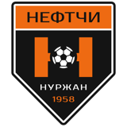

«Нефтчи» на ИрадОдин

Все домашние и выездные матчи ФК «Нефтчи» Нуржан в чемпионате и Кубке Ирада ИрадОдин показывает в прямом эфире с русским комментарием. Комментатор — Валерий Дёмин, голос нуржанского футбола с 1998 года.«Нефтчи» — чемпион Ирада 2026 года! В последнем туре 31 октября нуржанцы обыграли «Тулпар» — 2:1 — и опередили талассцев на одно очко. Подробнее »
Ближайшая трансляция
Кубок Ирада. Финал. «Нефтчи» — «Аттелком»
Суббота, 7 ноября, 14:00. «Силк Роуд Арена», Талас. Начало трансляции в 13:50.
Чемпионат Ирада 2026. Итоговая таблица
| # | Команда | И | В | Н | П | Мячи | О |
|---|---|---|---|---|---|---|---|
| 1 | Нефтчи | 27 | 19 | 6 | 2 | 48:12 | 63 |
| 2 | Тулпар | 27 | 18 | 8 | 1 | 53:14 | 62 |
| 3 | Дастгох | 27 | 12 | 6 | 9 | 37:34 | 42 |
| 4 | Аттелком | 27 | 10 | 8 | 9 | 31:33 | 38 |
| 5 | Университет | 27 | 11 | 4 | 12 | 35:41 | 37 |
| 6 | Сурма | 27 | 9 | 9 | 9 | 29:31 | 36 |
| 7 | Темиржолчу | 27 | 7 | 10 | 10 | 33:30 | 31 |
| 8 | Ийык Джаныл | 27 | 7 | 8 | 12 | 25:36 | 29 |
| 9 | Кара-Буура | 27 | 7 | 4 | 16 | 29:44 | 25 |
| 10 | Нарын | 27 | 1 | 5 | 21 | 16:61 | 8 |
Матчи «Нефтчи» в сезоне 2026
| Тур | Дата | Матч | Счёт |
|---|---|---|---|
| 27 | 31.10 | Нефтчи — Тулпар | 2:1 |
| 26 | 24.10 | Темиржолчу — Нефтчи | 0:1 |
| 25 | 10.10 | Нефтчи — Аттелком | 3:1 |
| 24 | 03.10 | Университет — Нефтчи | 0:1 |
| 23 | 26.09 | Нефтчи — Сурма | 2:2 |
| 22 | 19.09 | Дастгох — Нефтчи | 1:3 |
| 21 | 05.09 | Нефтчи — Ийык Джаныл | 2:0 |
| 20 | 29.08 | Кара-Буура — Нефтчи | 1:0 |
| 19 | 22.08 | Нефтчи — Нарын | 1:0 |
| 18 | 08.08 | Тулпар — Нефтчи | 0:0 |
| 17 | 01.08 | Нефтчи — Темиржолчу | 0:2 |
| 16 | 25.07 | Аттелком — Нефтчи | 0:2 |
| 15 | 11.07 | Нефтчи — Университет | 2:0 |
| 14 | 04.07 | Сурма — Нефтчи | 0:4 |
| 13 | 27.06 | Нефтчи — Дастгох | 1:1 |
| 12 | 13.06 | Ийык Джаныл — Нефтчи | 0:3 |
| 11 | 06.06 | Нефтчи — Кара-Буура | 2:0 |
| 10 | 30.05 | Нарын — Нефтчи | 0:4 |
| 9 | 16.05 | Нефтчи — Тулпар | 1:1 |
| 8 | 09.05 | Темиржолчу — Нефтчи | 1:2 |
| 7 | 02.05 | Нефтчи — Аттелком | 0:0 |
| 6 | 18.04 | Университет — Нефтчи | 0:2 |
| 5 | 11.04 | Нефтчи — Сурма | 3:0 |
| 4 | 04.04 | Дастгох — Нефтчи | 1:1 |
| 3 | 21.03 | Нефтчи — Ийык Джаныл | 1:0 |
| 2 | 14.03 | Кара-Буура — Нефтчи | 0:2 |
| 1 | 07.03 | Нефтчи — Нарын | 3:0 |
Полная статистика — на сайте Федерации футбола Ирада. Канал клуба в «Тулпаре»: @neftchi.